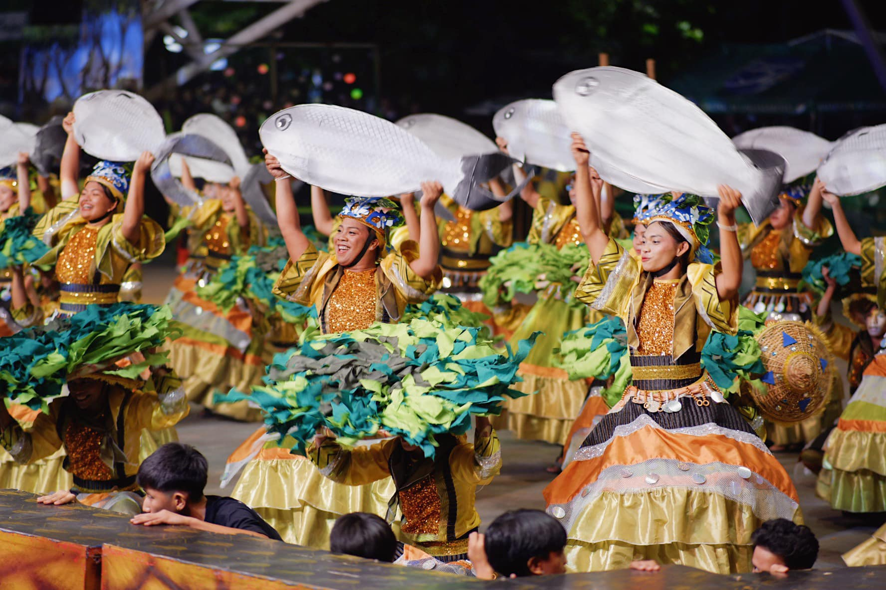
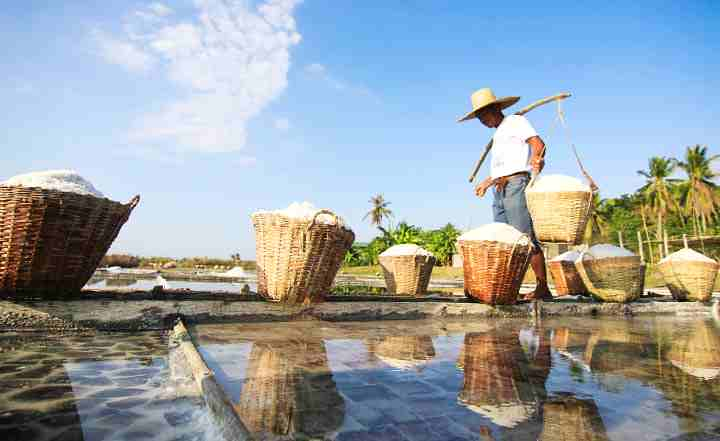
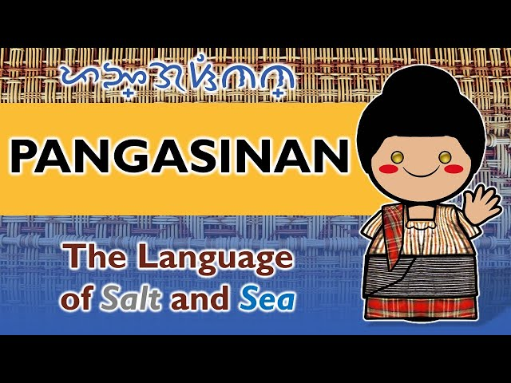

Rich Cultural Heritage
Pangasinan culture is shaped by tradition, faith, and community life. It reflects the province’s strong connection to history and local identity.

Festivals
Pangasinan celebrates colorful festivals like the Bangus Festival in Dagupan, showcasing food, dance, and culture.

Traditions
Families value respect, strong community ties, and religious practices passed down through generations.

Language
The main language is Pangasinense, along with Ilocano and Filipino used in daily communication.
Daily Life & Beliefs
Why Culture Matters
Pangasinan’s culture connects its people to their history and strengthens community identity.
Back to About